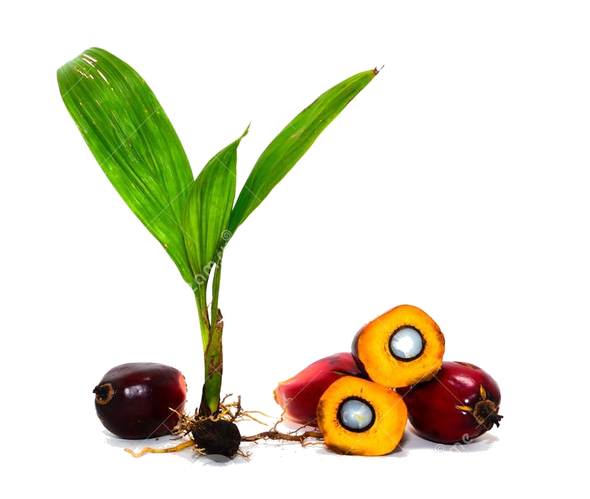

Oil Palm Seedlings
PPKS (Palm Oil Research Center) has produced superior international quality oil palm seeds in accordance with the 'Quality Management System' (ISO 9001: 2008)
some important things that will be discussed in this documentation
Oil Palm Seedlings
PPKS (Palm Oil Research Center) has produced superior international quality oil palm seeds in accordance with the 'Quality Management System' (ISO 9001: 2008)
Oil Palm Cultivation
How to cultivate oil palm can increase crop yields. The main thing in the cultivation of oil palm by fulfilling the requirements for growing oil palm
Palm Oil Processing
The most important part to be processed from oil palm is the fruit. The pulp of the fruit produces crude palm oil which is processed into raw material for cooking oil.
Hot news about palm oil
Palm oil fuel
PT Pertamina (Persero) focuses on developing the production of environmentally friendly fuels or green energy. In addition to protecting the environment, the development of environmentally friendly energy is encouraged to reduce dependence on fossil fuels, whose reserves are depleting. Crude palm oil (CPO) is one of the main renewable energy (EBT) commodities used by Pertamina to substitute fossil fuels and produce environmentally friendly energy.